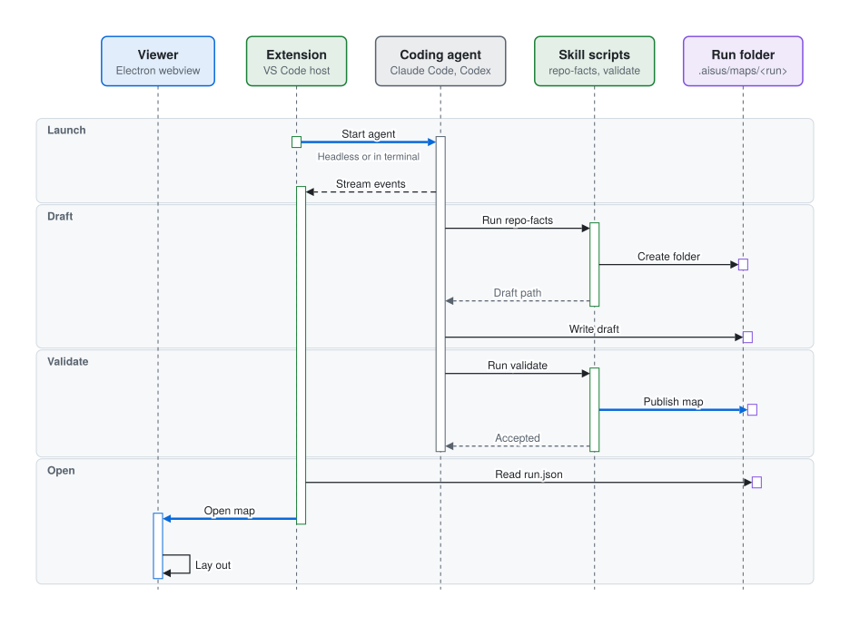

aisus
Final Report
Group 7
List each member's name and student number.
November 2026
Contents
Summary
In half a page, say what aisus is, what shipped, how many people use it and the main lesson. Write this part last.
1 The application
1.1 The problem
Describe the developer who now reads more code than they wrote, such as agent output, a teammate's large pull request or an unfamiliar codebase.
1.2 What aisus does
Explain how a coding agent maps the repository, how every box cites line ranges, and how the editor marks each box as fresh, moved, edited or missing.
1.3 Where aisus runs
| Surface | What it does | Status |
|---|---|---|
| VS Code extension | ||
| Agent skills | ||
| IntelliJ IDEA plugin | ||
| aisus cloud | ||
| GitHub Action |
1.4 A walkthrough
Follow one user from installation to reviewing a change, with a screenshot at each step.
2 Similar applications and what makes aisus different
Three products are closest to aisus. Eraser is a diagramming canvas with AI, IcePanel is a modelling tool for architects, and CodeBoarding maps a repository from its code. They start from different places, but all three are moving towards the same idea, in which an agent reads the code and keeps an architecture diagram current.
2.1 Eraser

How it works. Eraser serves system architects. It draws diagrams from cloud accounts, code, configuration databases and spreadsheets. To map code, a team connects a GitHub, GitLab or Azure DevOps repository and prompts for a diagram, and Eraser scans the files on its own servers. Its Eraserbot watches chosen files and draws the diagram again when a pull request touches them.
Business model. Eraser sells seats, with AI usage metered in credits. The free plan has 3 files and 3 AI credits. Business costs $45 per member a month on an annual plan, with 100 credits and one connected repository. Every new AI drawing, including each Eraserbot update, spends credits, so revenue grows with both team size and AI use.
Traction. Eraser was founded in 2020. By May 2024 it had raised $6 million in venture funding, its AI had generated more than one million diagrams, and they reported tenfold growth since adding AI features. Its website shows Microsoft, Amazon, Visa, Gartner, KPMG and Kakao among its customers.
2.2 IcePanel

How it works. IcePanel serves software architects and engineering organisations, and also non-tech teams who need to understand a system. It is a collaborative tool for C4 models, which describe a system at the levels of context, container and component. People build the model by hand, and every diagram draws from that one model. Since October 2026 a model can also be drawn via a plugin for Claude Code and Copilot.
Business model. IcePanel charges per editor, and viewers are always free, so one paying architect can share the model with a whole organisation. The free plan has one editor and 100 objects. Growth costs $40 per editor a month with the MCP server support. Enterprise starts at 50 editors with single-tenant hosting. After Y Combinator the founders chose not to raise further capital, and the company grows on its revenue.
Traction. Two founders launched IcePanel in March 2021 and won their first paying customer, a Fortune 500 company, five months later. It joined Y Combinator's Winter 2023 batch, reached $2.4 million by July 2025. Its team has nine people. Its customer page lists Cisco, BMW, Alphabet and Shift4, among others.
2.3 CodeBoarding

How it works. CodeBoarding serves developers and code reviewers, and is the closest competitor to aisus. It draws interactive architecture maps of a codebase and reviews pull requests as changes to those maps. Its engine runs language servers to find symbols and call graphs in 9 languages, then asks a language model to name and describe the components.
Business model. CodeBoarding follows an open core model. The engine is open source under the MIT licence and free to use. Because users bring their own model key, CodeBoarding carries little of the model cost itself. Pro costs $9.99 a month and offers unmetered use, faster generation and health monitoring, and teams are sold through demos.
Traction. The engine's repository was created in April 2025. On 18 November 2026 it had 2,685 stars and 235 forks, and the VS Code extension had 1,900 installs. CodeBoarding also publishes many example maps of public repositories. Its company page lists a team of three.
2.4 What makes aisus different
Integrated viewing experience
Eraser and IcePanel are web platforms, and CodeBoarding's explore and review modes favour its web app. A diagram in a browser tab sits far from the code it describes. The developer switches windows to check what a box means, and loses their place in both. aisus opens the map in a panel beside the code, in VS Code, Cursor or any other platforms that the developers love.
Visualising plans with diagrams
It is unavoidable that every developers vibe code, they happily accept changes proposed in a long plans in pure text. When a plan grows long, it is hard to picture which parts of the system it touches and the unintended side-effects. aisus's plan skill turns a text spec into a change diagram base on the current system. The developer sees the reach and the risks of a change before any code is written, and can correct the plan while that is still cheap.
An index for agents
The map lists each part of the system with the files and lines that implement it. An agent that reads it first can go straight to the code a task touches, which saves exploration time and tokens on every task. aisus already writes the map into AGENTS.md and CLAUDE.md, the files coding agents read at the start of a session, and Ask answers questions from it. Because aisus knows which boxes are fresh, it can tell the agent which entries to trust. The competitors' MCP servers give agents a diagram or a model without that signal, implying that the diagrams and codebases need to be maintained independently.
2.5 Where aisus falls short
Grounding
CodeBoarding's relationships come from static analysis, which no language model can invent. aisus's come from an agent and are checked against evidence rules, and correct citations do not guarantee correct groupings. Pilot users raised map accuracy as a concern in Progress Report 2. This could be our future because having a benchmark will give more credibility with our tool.
Breadth
Eraser and IcePanel serve audiences and diagram types that aisus deliberately leaves out, such as presentation diagrams, business processes and future-state designs. We accept this shortfall because we want to focus on the developer experience which we have more domain knowledge in.
2.6 Threats
Convergence. The incumbents are adopting the idea of generating diagrams with the user's own agent. IcePanel's plugin of 22 October 2026 and Eraser's MCP server both show it. However, usually these geneartions have poor version control and changes might not be accurate, aisus could fill the gap here.
Agents' own indexes. Agent tools also build their own repository indexes and memory files. If those summaries become good enough, the agent half of the pitch weakens and the developer half has to carry it.
Sources
- Eraser: eraser.io, pricing, codebase diagrams, Eraserbot, customers, Business Insider, May 2024
- IcePanel: icepanel.io, pricing, customers, IcePanel's journey to $2 mil, Y Combinator profile, IcePanel plugin
- CodeBoarding: codeboarding.org, engine repository, GitHub Action, VS Code extension, company page
3 Milestones and timeline
3.1 Planned and actual timeline

3.2 Milestones hit and missed
HitLateMissed
| Milestone | Note |
|---|---|
| Interviews & Prototyping Initial understanding of the problem space | Interviewed 5 students on their coding habits. Based on the findings and our own opinions, we vibe-coded a few variations before finalising on one idea. |
| Progress Report 1 Prototype, customer contact report & prototype feedback | v0.1.0 prototype is an VS Code extension that generates diagrams with backlinks to code. |
| Learning Session feature Guided task mode, aim to allow users to understand codebase better. | The feature is broken down into: Ask, code tours, explain-back and bug hunt sessions. |
| Landing page Marketing material preparation. | Launched aisus.dev landing page together with v0.3.0 extension. |
| Diagram version control Allow versioned diagrams so that the users can visualize the changes. | Took many iterations to refine the experience: Code-freshness badge; Show changes UI interface; Diagram comparison; Change summary panel; /aisus-plan: visualize AI's spec plan in a diagram. |
| Demo video Show users the features of aisus. | Vid 1: A tutorial on generating diagrams, we didn't use it because it is too dry. (link). Vid 2: An onboarding video for the interviewees and class demo Vid 3: STePS promotional video (best promotional video!). |
| Developer outreach understanding user's need | The team contacted six developers and interviewed them about their experience with aisus, as section 6 describes. . CS2103 evaluation pilot. (dropped, cs2103 students had finished their projects) |
| IntelliJ IDEA plugin Prepared for cs2103 cohort. | The plugin generates maps, opens cited code and reviews changes. Its feature set isn't as complete as VS code. |
| Reduce LLM credits Reduce cost while maintaining accuracy. | It is a hard problem. An agent that reads less can miss the code a box should cite, and finding the balance needs deeper research than the schedule allowed. |
| Progress Report 2 Competitor analysis; Project iteration feedback; Marketing plans | Explored cloud features to allow users to collaborate. Shifting focus to product marketing and distribution via different media channels. |
| Security scan Prevent code leakage and unintended code execution. | No security tests ran, because the team lacked the security expertise. The safety rules built into v0.3 keep writes inside the repository, let agents run only pre-approved commands, and cover prompt injection and secrets. |
| Class demo Prepare the demo and pitch. | v0.3.3 released. |
| Marketing poster design Project infographics. | Designed and distributed flyers in SoC. |
| Pilot fixes Resolve critical usability issues raised by the users. | Incremental fixes throughout the last two weeks. v0.3.4 released |
| STePS preparation | aisus presented its poster and its video at STePS, and won best promotional video. |
| Final report | Submit the final report before Nov 22. |
4 Contributions and acknowledgements
4.1 Roles
Give one row per member.
| Member | Role | Main areas | Key deliverables |
|---|---|---|---|
4.2 Individual contributions
Describe each member's work in a short paragraph. Commit counts or areas owned can support it.
4.3 Acknowledgements
People
Thank the pilot users, testers, teaching staff and anyone else who gave feedback or help.
Tools, services and libraries
List the external tools, services and open source libraries the project relied on.
5 Application design
aisus keeps its core libraries apart from the platforms that show a map. The core libraries are the map model, the layout manager and the agent skills. Each platform adds only a thin layer on top of them, made of a panel that starts runs and a diagram viewer that draws the result. Figure 5 shows this split for the VS Code extension and the IntelliJ plugin.
The split lets aisus reach a new platform quickly. The IntelliJ plugin hosts the same diagram viewer as the VS Code extension, inside the IDE's built-in browser, and both rely on the same core libraries. A new platform needs its own panel and a place for the viewer, and the core logic stays as it is.
The split also keeps the agent skills independent of how a map is drawn. A skill has one job, which is to produce a JSON document in the map format described in section 5.1. The map model checks that document before it is published. Any viewer that reads the map format can then draw it, on whichever platform it runs.

5.1 Data model
The map format treats a diagram as a set of claims about the code. A box claims that a part of the system exists, an arrow claims that one part relies on another, and a group claims that some parts belong together. A map is only as useful as these claims are true. The format therefore ties every box to evidence, as Figure 5.1 shows from left to right.
That evidence is the citation. A box must point to the lines of code that make it real, and a box that points to nothing is refused. A reader never has to take the diagram on trust. They can open any box and read the code it stands for, which turns the map from a picture into an index of the codebase.

5.2 Key flows
Two workflows carry most of what aisus does. The first, in Figure 5.2.1, turns a request into a map. A developer asks for a map, and a coding agent studies the repository and drafts one. aisus does not take the draft on trust. It checks the draft against the map format and against the code it cites, and hands it back with every problem it finds until the draft passes. These checks are plain code rather than a model's judgement. Hence, a map that passes is certain to render, and every box in it points to code that exists. Only such a map is kept and shown to the developer.
The second workflow, in Figure 5.2.2, shows what has changed. The developer picks an earlier map of the same code, and aisus compares the two. It works out which parts of the system appeared, changed or disappeared in between, and marks them on the map on screen. The comparison is also plain code without agent involvement. A reviewer sees how a change moves the architecture, rather than piecing it together from the files it touched. Together the two workflows let a team draw a map once and then follow how its architecture moves over time.


5.3 Deployment
Figure 5.3 shows where each part of aisus runs. Nearly all of it runs on the developer's own computer. The extension, the coding agent and the maps sit beside the code, and drawing or comparing a map needs no aisus server. A developer who never shares a map can use aisus without an aisus account.
Only two paths lead to aisus cloud, and a person chooses each one. A developer can share a map with the team, and a team can let the pull request check send its results. What travels is the map and its findings. The code stays in the repository, and the check comments on the pull request whether or not anything is sent.
The cloud itself is one small server. It hosts the website where a team reads shared maps, and it keeps those maps in its database. GitHub tells it who someone is and which repositories they may see, and Stripe takes the payments. aisus therefore holds no passwords and no card details. Running a single server keeps the cost of the service low.

6 Users and analytics
6.1 What we measure
The extension sends no telemetry by design. Explain which sources the numbers come from instead, such as site analytics, store install counts and cloud accounts.
6.2 Current numbers
| Metric | Value | Source | Date |
|---|---|---|---|
| Site visitors | |||
| Downloads and installs | |||
| Cloud sign-ups | |||
| Active users | |||
| Maps created | |||
| Pilot users |
6.3 Analytics evidence
6.4 User feedback
Summarise feedback from pilot users and the class demo, with quotes where you have them.
6.5 What the numbers show
Compare the numbers with the targets and explain the gap.
7 Future plans and strategies
7.1 Product
Cover the Marketplace launch, onboarding, map accuracy and IntelliJ performance.
7.2 Validation
Describe how to measure whether agents that read the map first use fewer tokens, and how to run user studies on task time and understanding.
7.3 Growth and distribution
Cover the community channel, public showcase maps and the choice of licence.
7.4 Business
Cover pricing, running costs and the path to paying teams.
8 What we learned
8.1 Technical
Describe what building the extension, agent skills, cloud and IntelliJ plugin taught the team.
8.2 Product and market
Describe what the team learned about getting a developer tool discovered and installed, and about what users valued.
8.3 Teamwork and process
Describe how the team planned, split work and handed over between shifts.
8.4 What we would do differently
Appendices
A Full Gantt charts
B Additional screenshots
C User survey or interview script
Include this appendix only if the team used a survey or interview script.